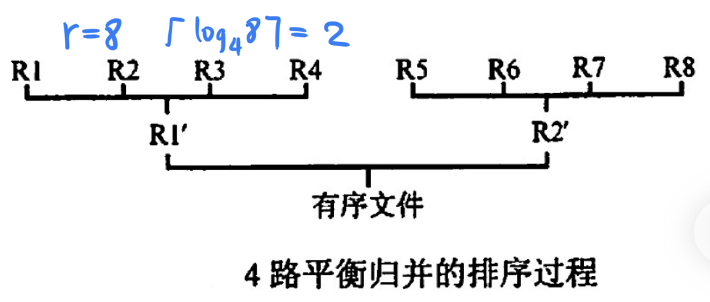
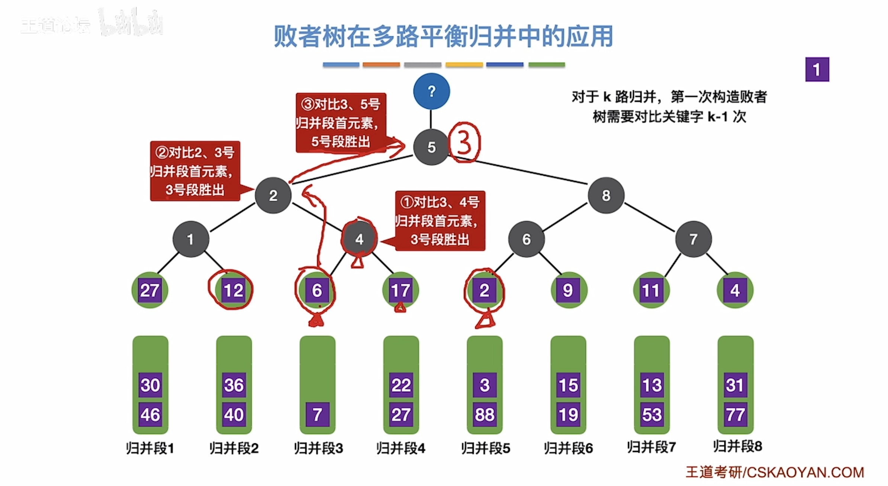
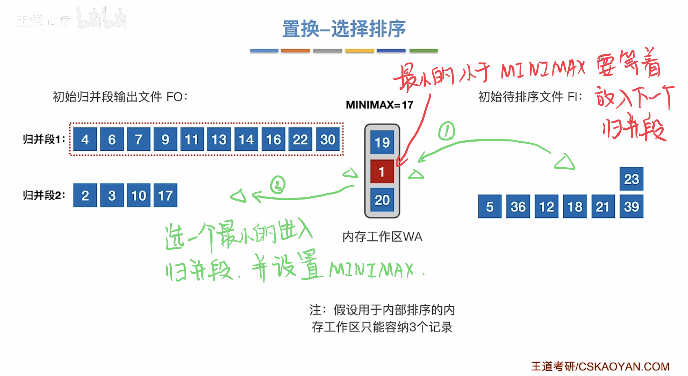
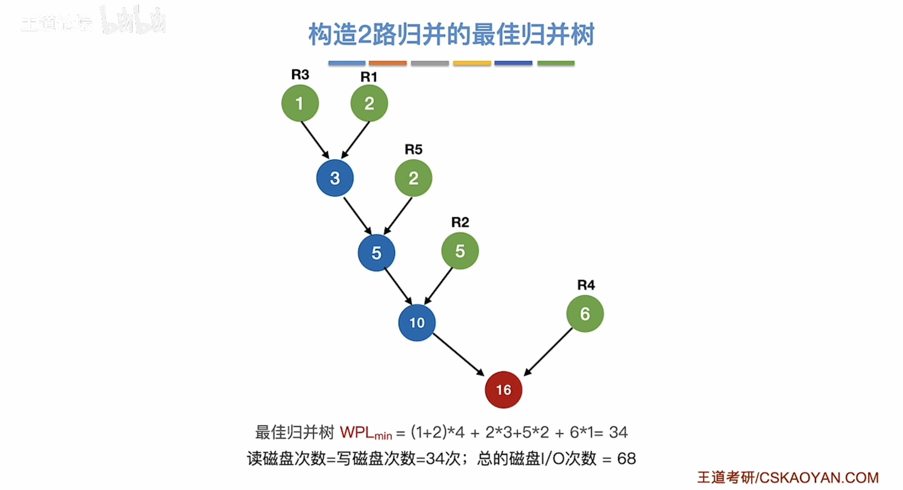
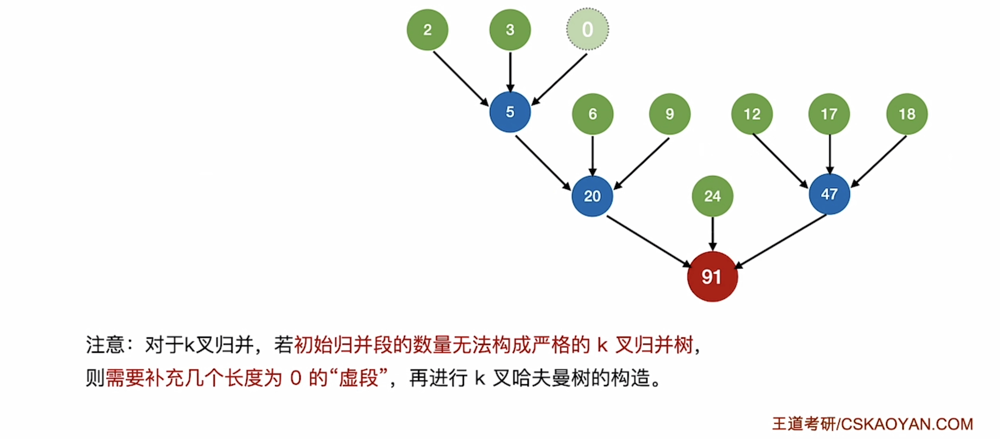
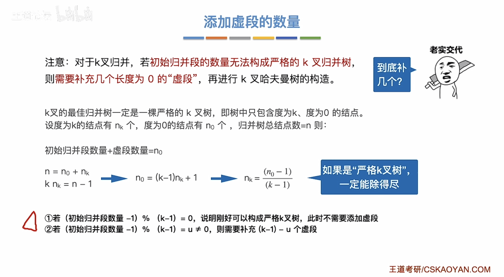

外部排序
2022.10.27
外部排序基本概念
① 外部排序指待排序文件较大，内存一次放不下，需存放在外存的文件的排序。
② 为减少平衡归并中外存读写次数所采取的方法：增大归并路数和减少归并段个数。
③ 利用败者树增大归并路数。
④ 利用置换-选择排序增大归并段长度来减少归并段个数。
⑤ 由长度不等的归并段，进行多路平衡归并，需要构造最佳归并树。
外部排序的方法
-
普通的外部排序方法：生成初始归并段，第一趟归并，第二趟.....
-
外部排序通常使用：归并排序法
-
两个步骤：
-
根据内存缓冲区大小，划分归并段
-
对归并段进行归并
-
外部排序时间 = 内部排序时间 + 外存读写时间 + 内部归并时间
-
r个归并段进行k路归并：树的高度-1 = $\lceil \log_kr \rceil$ = 归并趟数

- 增大k可以减少归并趟数
多路平衡归并与败者树

- k路归并败者树深度：$\lceil \log_2 k \rceil$
- k路归并败者树单个元素比较次数：$\lceil \log_2 k \rceil$
- k路归并败者树总比较次数：$\lceil \log_kr \rceil(n-1)\lceil \log_2k \rceil=(n-1)\lceil \log_2r \rceil$
置换-选择排序
原始数据 -(置换选择排序)-> 初始归并段
【王道计算机考研 数据结构-哔哩哔哩】 https://b23.tv/aq4eOoz

最佳归并树
初始归并段 -(最佳归并树)-> 归并排序(败者树)
注意读写磁盘总数是带全路径长度的两倍！

注意多路归并的情况！可能要补充长度为0的虚段！


例题
- 设在磁盘上存放有375000个记录，做5路平衡归并排序，内存工作区能容纳 600 个记录，为把所有记录排好序，需要做（）趟归并排序。
A. 3
B. 4
C. 5
D. 6
【答案】：375000 / 600 = 625，625 = 5^4，B
- 设有5个初始归并段，每个归并段有20个记录，采用5路平衡归并排序，若不采用败者树，使用传统的顺序选出最小记录（简单选择排序）的方法，总的比较次数为(①); 若采用败者树最小的方法，总的比较次数约(②）。
A. 20
B. 300
C. 396
D. 500
【答案】：100x5=500，100xlog_5 100=300, DB -> CB
4*
- 置换-选择排序的作用是（）
A. 用于生成外部排序的初始归并段
B. 完成将一个碰盘文件排序成有序文件的有效的外部排序算法
C. 生成的初始归并段的长度是内存工作区的2倍
D. 对外部排序中输入/归并/输出的并行处理
【答案】：A
- 最佳归并树在外部排序中的作用是（）。
A. 完成m路归并排序
B. 设计m路归并排序的优化方案
C. 产生初始归并段
D. 与锦标赛树的作用类似
【答案】：B
- 在下列关于外部排序过程输入输出级冲区作用的叙述中，不正确的是（）
A. 暂存揄入/输出记录
B. 内部归并的工作区
C. 产生初始归并段的工作区
D. 传送用户界面的消息
【答案】：C -> D
- 在做m路平街归并排序的过程中，为实现输入/内部归并/输出的并行处理，需要设置(①）个输入缓冲区和（②）个输出缓冲区。
① A. 2 B.m C. 2m- 1 D. 2m
② A. 2 B.m C. 2m -1 D. 2m
【答案】：CA -> DA
- 【2013 统考真题】已知三叉树下中6个叶结点的权分别是2，3，4，5，6，7，T的带权（外部）路径长度最小是（）
A. 27
B. 46
C. 54
D. 56
【答案】：{023}->5,{455}->14,{14,6,7}->27，带权！3x(2+3)+2x(4+5)+1x(6+7)=31+15=46,B
- 【2019 统考真题】设外存上有120 个初始归并段，进行12 路归并时，为实现最佳归并，需要补充的虛段个数是（）。
A. 1
B. 2
C. 3
D. 4
【答案】：B